The windows at the Geisel Library are dirty and annoy library visitors. Manca notified the staff, but was ignored.
Windows get dirty quickly due to the buildup of dirt, pollution, and grease, which easily sticks to the surface. Cleaning them can be challenging,
as it often requires reaching difficult angles and heights, along with continuous wiping motions that may lead to injuries for homeowners with limited mobility.
A study performed by the International Journal of Innovation and Technology Management was conducted to show
how homeowners and tenants respond at the time of cleaning the windows of their apartments or homes, how often they clean them, and what services they use more frequently.
The survey results showed a diverse and insightful response:
When asked about the level of satisfaction with the service to the windows. Around 56% of the respondents were not satisfied with the service.
Humans manually climbing
Issue: Puts human's lives in danger
Skyline Robotics's Window Cleaning Robot
Issue: Requires an specific installation
Mobile Elevated Platforms
Issue: Requires an specific installation
Portable Magnetic Robot
Issue: Expensive
Robot with 2 sockets, 2 ropes, and a spinning mop.
- The ropes are attached to the sockets which are sticked to the top corners of the window.
- By changing the tension and lengths of these ropes, the robot can go up, down, and side to side.
The robot that we make should be able to clean the entire window by varying the tension and length of ropes. This will allow the robot to reach every angle of the window while sweeping a spinning mop as it moves.
There are 2 different Modes:
- Automatic Mode: The bot will find all the edges and boundaries of the window by itself, traversing the entire window.
- Manual Mode: User controls the bot through a phone or computer, traversing the path input from user.
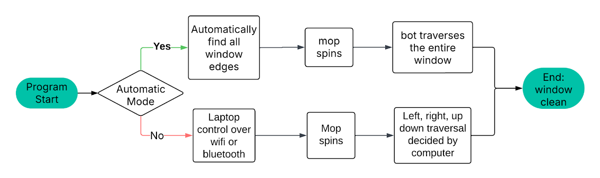
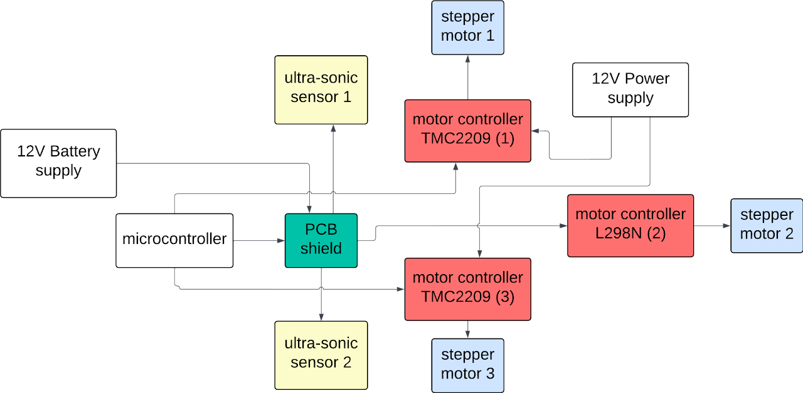
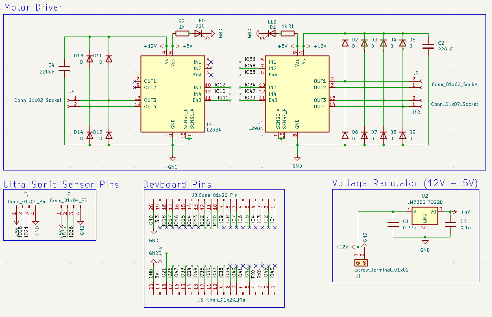
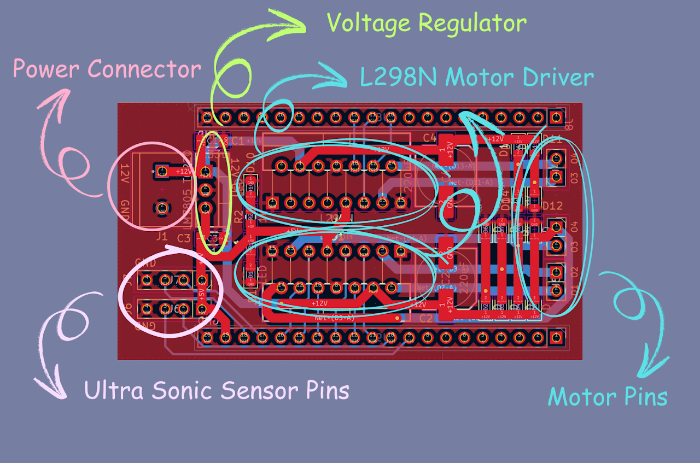
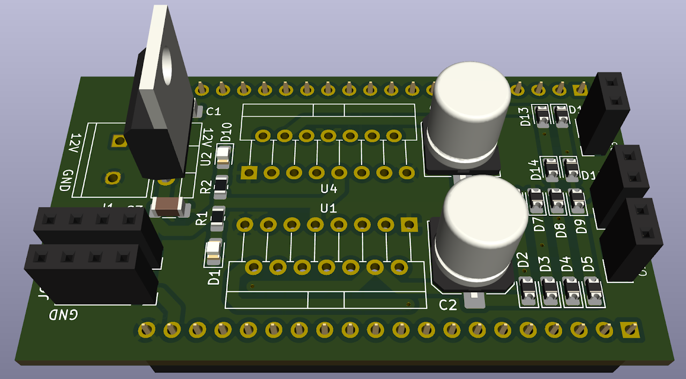
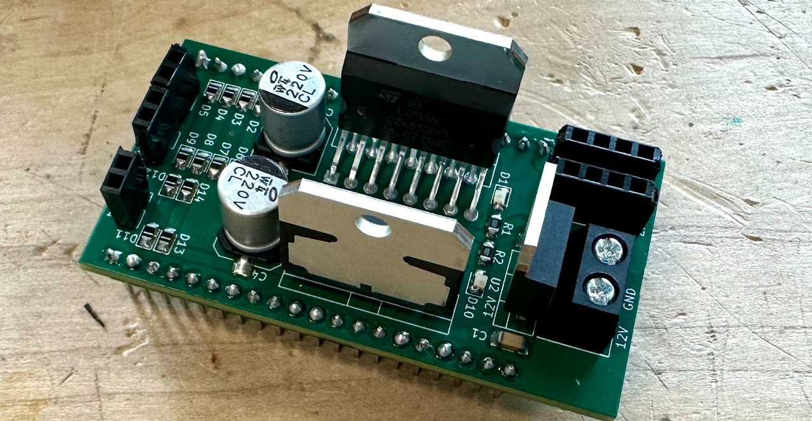
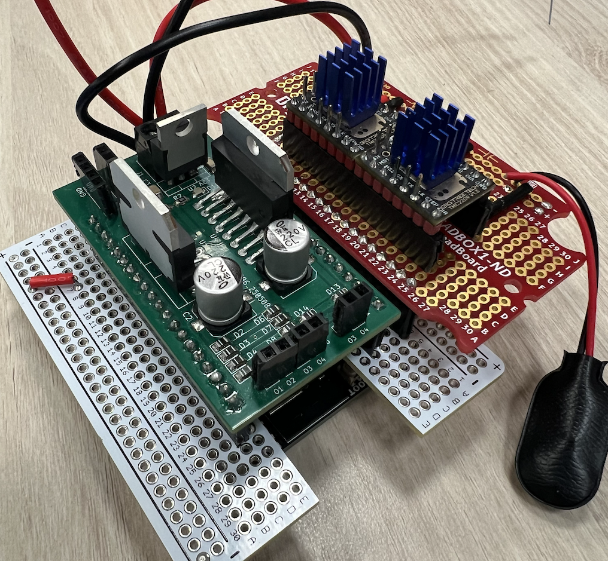
After 4 hours of different iterations and 14 hours of printing, we finally got a 3D printed chassis.
Sadly, the 3D-printed case was too heavy for the motors to move without slipping, so we decided on the laser-cut version.
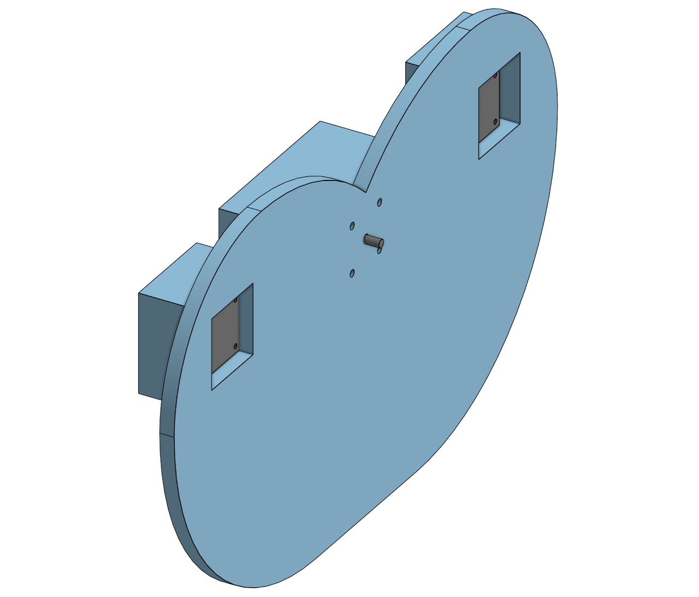
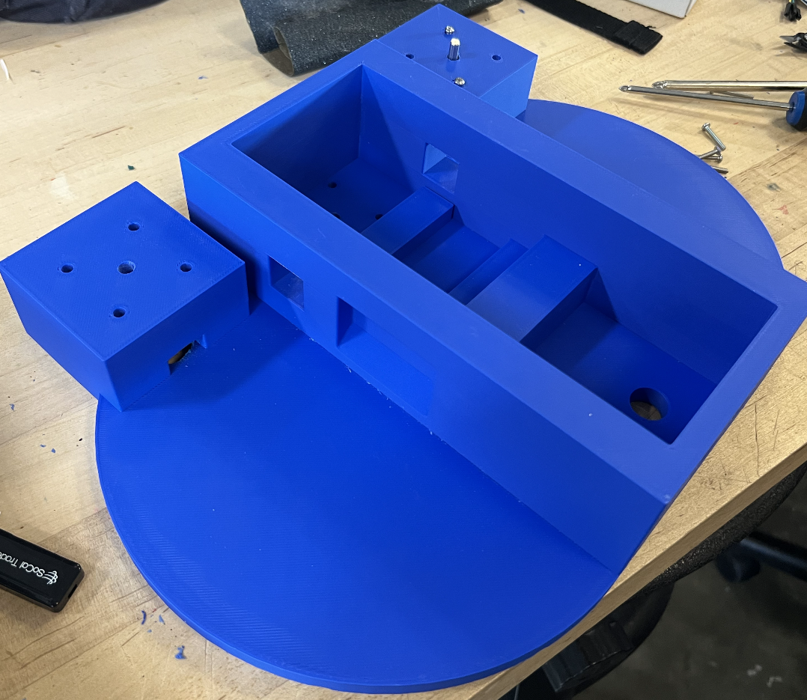
After a quick laser cut, the tolerances for the slots were a little loose, so some wood glue was used to reinforce and fortify the chassis.
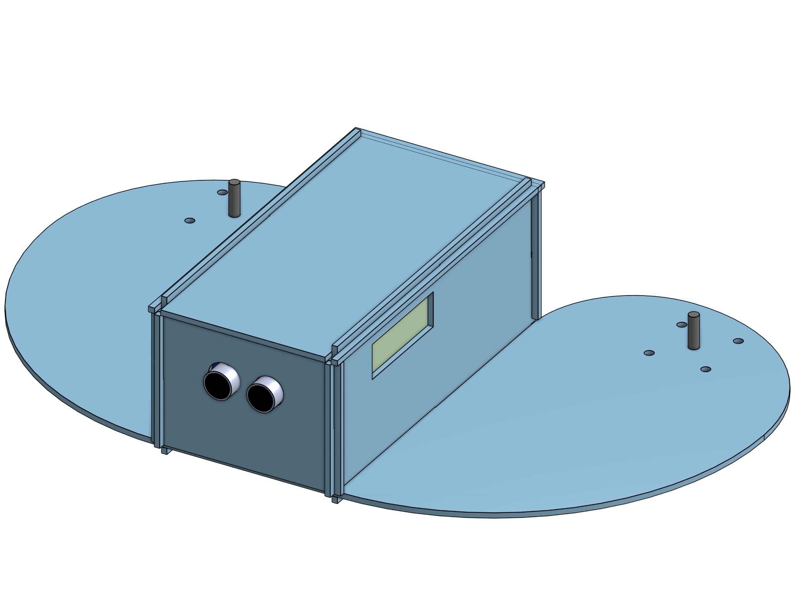
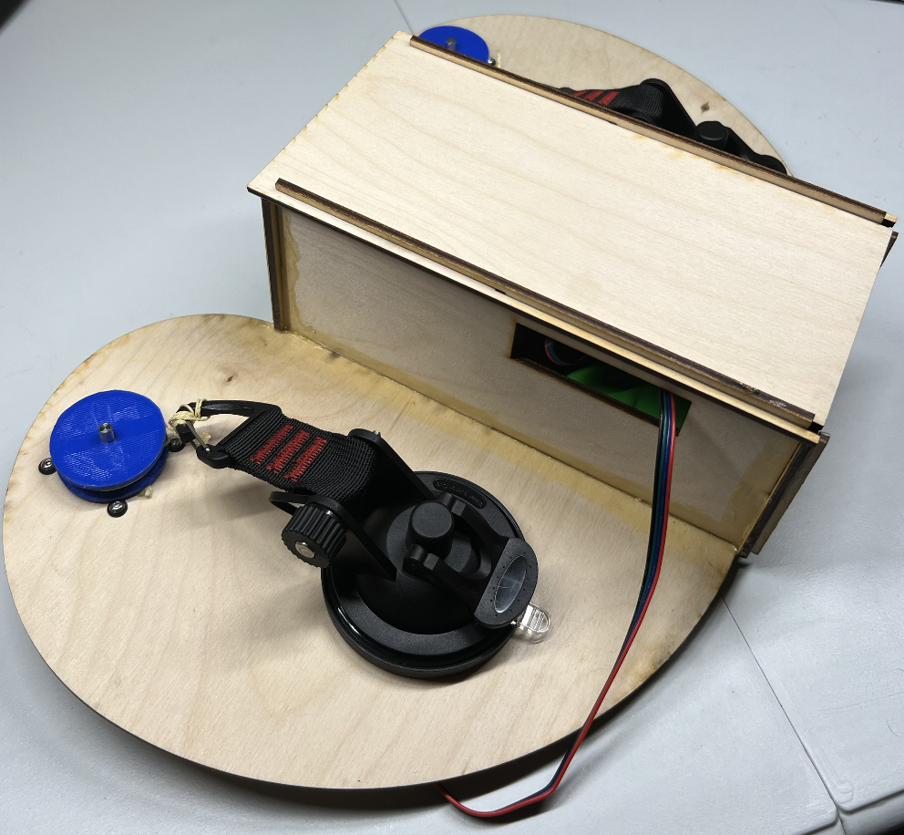
https://lastminuteengineers.com/stepper-motor-l298n-arduino-tutorial/
We used the Last Minute Engineers tutorial to learn how to connect and control a stepper motor using the L298N driver and an Arduino. It also helped us understand which pins to use for direction and speed control in our code.
https://docs.cirkitdesigner.com/component/bcc720ad-e6dc-e6f5-05e1-3da5dfb74a6b/tmc2209
We used the Cirkit Designer documentation to understand the hardware setup of the TMC2209 stepper driver. It helped us identify the correct pins for power, ground, STEP, DIR, EN, and UART to connect the driver properly to our circuit.